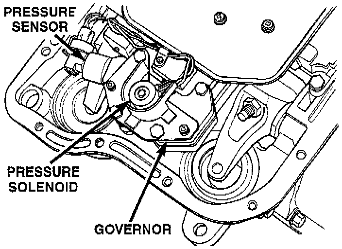
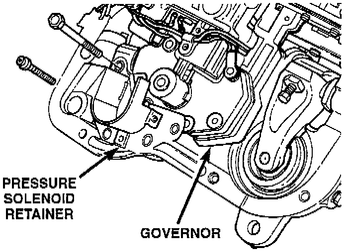
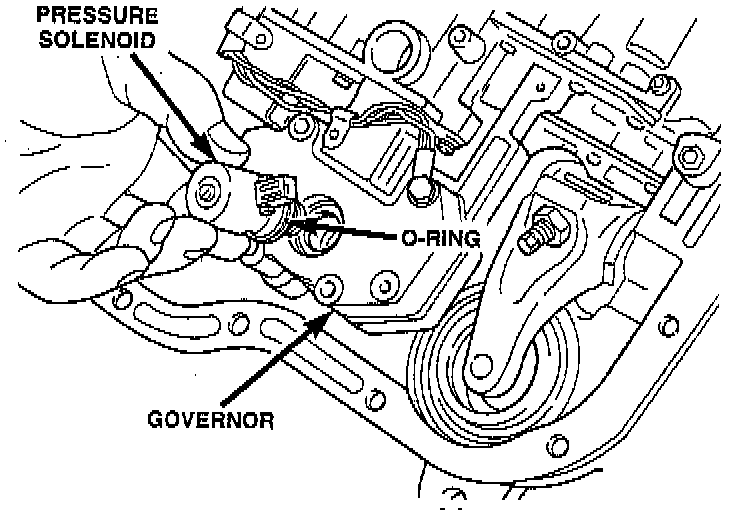
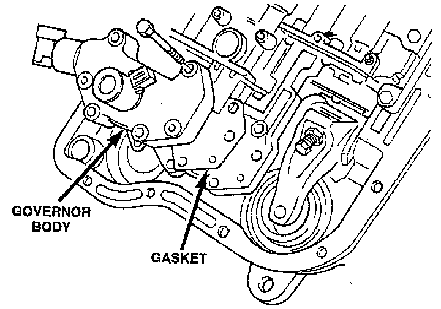

Replacement
REMOVAL1. Hoist and support vehicle on safety stands.
2. Remove transmission fluid pan and filter.

3. Disengage wire connectors from pressure sensor and solenoid.
4. Remove screws holding pressure solenoid retainer to governor body.

5. Separate solenoid retainer from governor.

6. Pull solenoid from governor body.
7. Remove bolts holding governor body to valve body.

8. Separate governor body from valve body.
9. Remove governor body gasket.
10. Remove retainer holding pressure sensor to governor body.

11. Pull pressure sensor from governor body.
NOTE: Before installing the pressure sensor and solenoid in the governor body, replace O-ring seals, clean the gasket surfaces and replace gasket.
INSTALLATION
1. Lubricate O-ring on pressure sensor with transmission fluid.
2. Align pressure sensor to bore in governor body.
3. Push pressure sensor into governor body.
4. Install retainer to hold pressure sensor to governor body.
5. Place gasket in position on back of governor body.
6. Place governor body in position on valve body.
7. Install bolts to hold governor body to valve body.
8. Lubricate O-ring, on pressure solenoid, with transmission fluid.
9. Align pressure solenoid to bore in governor body.
10. Push solenoid into governor body.
11. Place solenoid retainer in position on governor.
12. Install screws to hold pressure solenoid retainer to governor body.
13. Engage wire connectors into pressure sensor and solenoid.
14. Install transmission fluid pan and (new) filter.
15. Lower vehicle and road test to verify repair.